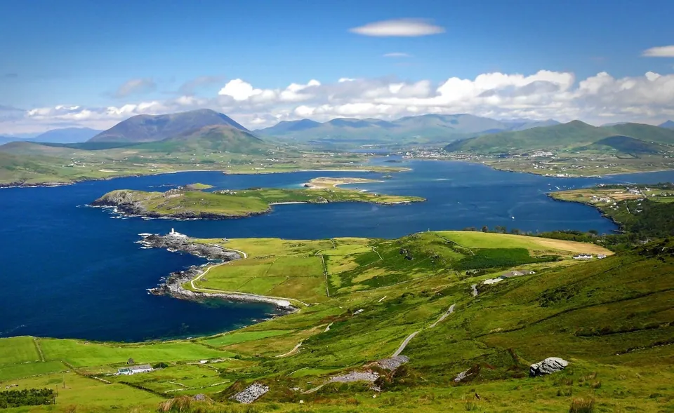
Découvrez
l'Irlande
Accueillir le Monde en Irlande Depuis Plus de 60 Ans
Message de PDG
"Bienvenue en Irlande, le pays de Joe O’Reilly Ireland DMC, et merci d’avoir pris le temps de visiter notre site Web. Nous serions ravis de pouvoir vous aider lors de votre prochain voyage sur notre merveilleuse île. Si vous avez besoin d’aide pour n’importe quel aspect de votre voyage, n’hésitez pas à nous contacter. Nous aimerions avoir de vos nouvelles !
J’espère que nous aurons bientôt l’occasion de travailler avec vous et d’accueillir vos clients sur nos côtes."
Bernard O'Reilly
Nos Partenaires


Ce Que Disent Nos Partenaires
"Le groupe Joe O'Reilly est notre DMC en Irlande depuis 17 ans et nous ne pouvions pas demander un meilleur partenaire. Les niveaux de service et d'attention incroyablement élevés qu'ils fournissent - à chaque tournant - nous donnent l'impression d'avoir notre propres bureaux (et propres collègues) à Dublin et Cork. Les problèmes sont anticipés et résolus avec le bien-être de nos clients toujours au premier plan. Bernard, Ann et tous les membres de l'équipe nous ont procuré un plaisir immense de travailler avec eux et nous attendons avec impatience de vivre encore 17 belles années ensemble!"

“Merci encore pour cette dernière collaboration. L'Irlande est un pays fantastique. Tous les commentaires des participants étaient des critiques élogieuses. Merci de ma part à toute votre équipe, pour leur créativité, leur enthousiasme et leur résilience. Ce nouveau succès nous rapproche encore plus de notre client. Nous reviendrons avec d'autres événements.”
Nos Services en Tant Que Voyagiste Irlandais
Circuits de Groupe en Irlande
Voir notre gamme complète de visites de groupe de loisirs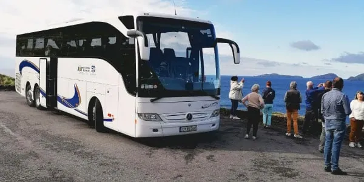
Voyages de Golf en Irlande
Des itinéraires sur mesure intégrant les meilleurs parcours de golf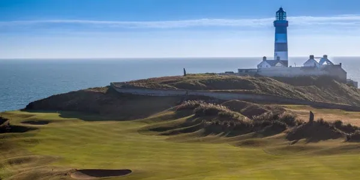
Voyages de Groupe de Rugby en Irlande
Commencez à planifier votre voyage de groupe Rugby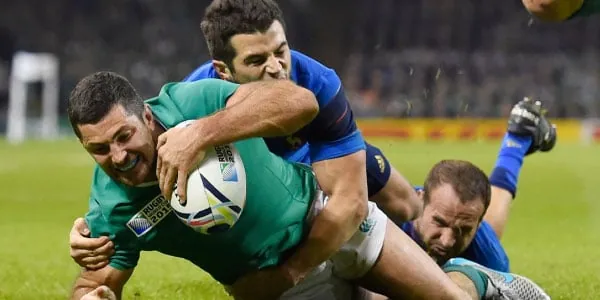
Voyages Équestres en Groupe en Irlande
Découvrez pourquoi l'Irlande est réputée comme « la patrie du cheval »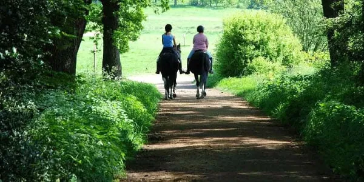
Voyagiste Spécialiste de M.I.C.E
Réunions, Incentives, Conférences et Événements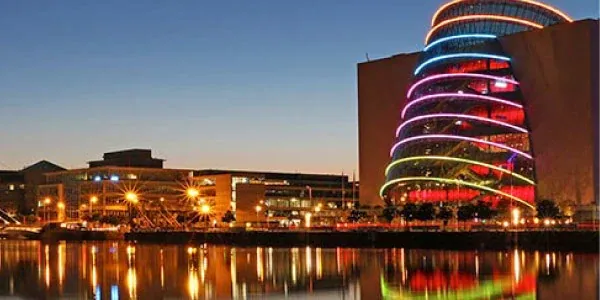
Voyages Loisirs Indépendants Irlande
Voyages super luxueux fait par les soins de nos concepteurs de voyages primés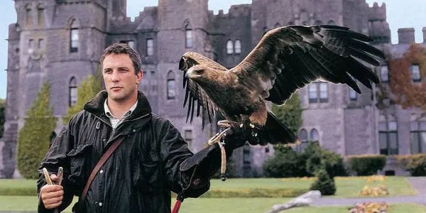
Circuit en Irlande pour Actifs Retraités
Nous comprenons les exigences uniques des voyages de groupe pour retraités actifs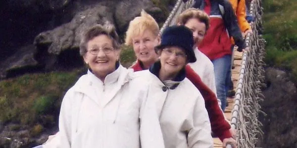
Voyages d'Intérêt Spécial en Irlande
Pour les groupes uniques avec des exigences et des intérêts particuliers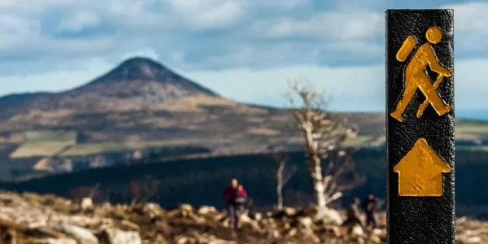
Nos Itinéraires Offrent l'Expérience Irlandaise Complète
Découvrez des sites emblématiques avec la célèbre hospitalité irlandaise
Nous veillons à ce que vos invités voient le meilleur de ce que l'Irlande a à offrir et repartent avec des souvenirs inoubliables.
Dégustez des pintes de Guinness et un ragoût irlandais, servis dans un pub irlandais traditionnel
Découvrez l'esprit irlandais inégalé de nos guides touristiques locaux
Des expériences uniques, avec un accès exclusif aux lieux et aux sites
Visites sur mesure pour des niches de clientèles
Visites de Groupe Créatives et Uniques
Joe O'Reilly Ireland DMC offre la meilleure qualité de circuit, de prix et d'assistance parmi tous les voyagistes irlandais.
Découvrez le meilleur de ce que l'Irlande a à offrir
Visites des sites emblématiques d'Irlande
Chauffeurs et guides conférencier expérimentés
Vaste sélection d'expériences irlandaises supplémentaires
Watch: Experience Ireland
Votre Voyagiste Spécialiste M.I.C.E
Des conférences d'entreprise complexes aux voyages de motivation uniques, Joe O'Reilly M.I.C.E est fier de fournir des services d'organisation et de gestion. d'événements aux normes internationales les plus élevées.
Votre Voyagiste Spécialiste Golf en Irlande
Depuis plus de 60 ans, Joe O'Reilly Ireland Golf est à l'avant-garde de l'organisation de circuits de golf en Irlande, notamment pour la Ryder Cup au K Club en 2006, lorsque nous nous sommes occupés des arrangements pour M. Arnold Palmer et son entourage.
Plus qu'un simple golf, nous ajoutons à votre voyage des expériences irlandaises authentiques et mémorables et proposons de nombreuses activités pour les non-golfeurs lors de votre voyage.
Services de Luxe Pour les Voyages Loisirs Indépendants
Voyages de luxe sur mesure en Irlande, gérés par les plus grands voyagistes irlandais.
Visites privées sur mesure des merveilles irlandaises
Formules pour MIP (Most Important People)
Expériences irlandaises authentiques
Voyages de Groupe de Rugby en Irlande
Laissez nos experts en rugby vous aider à planifier votre expérience ultime de rugby en Irlande.
Accès aux billets
Forfaits d'hospitalité d'avant et d'après-match
Forfaits golf avant et après match
Activités locales, y compris tournées musicales des pubs, circuits gastronomiques, dégustations de whisky et Guinness
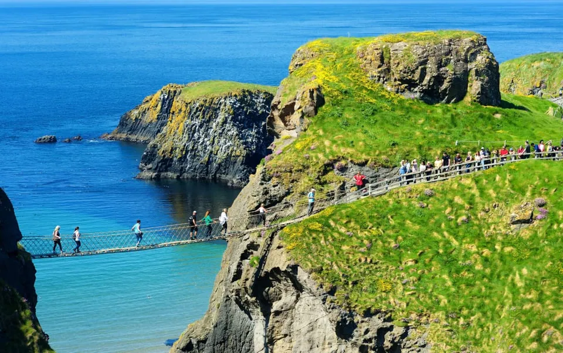
Circuit en Irlande pour Actifs Retraités
Notre équipe attentionnée et amicale comprend les exigences uniques des voyages de groupe à la retraite actifs. Nous écoutons vos besoins sur mesure et gérons tous les aspects de vos voyages de groupe de seniors, avec un haut niveau de service personnalisé.
Voyages d'intérêt spécial, tels que les pèlerinages et les voyages de shopping
Des autocars modernes, confortables et climatisés
Chauffeurs-guides bien habillés, serviables et expérimentés
Service entièrement géré et ponctuel
Voyages Équestres de Luxe Haut de Gamme en Irlande
Joe O'Reilly Ireland Equestrian a le privilège d'annoncer sa sélection de voyages équestres créatifs et luxueux en Irlande. Contactez notre service commercial pour recevoir une brochure.
Des voyages sur mesure, conçus exclusivement pour votre groupe.
Accès exclusif et forfaits au Dublin Horse Show.
Visites privées des haras irlandais.
Journées de course avec accès aux propriétaires et aux entraîneurs.
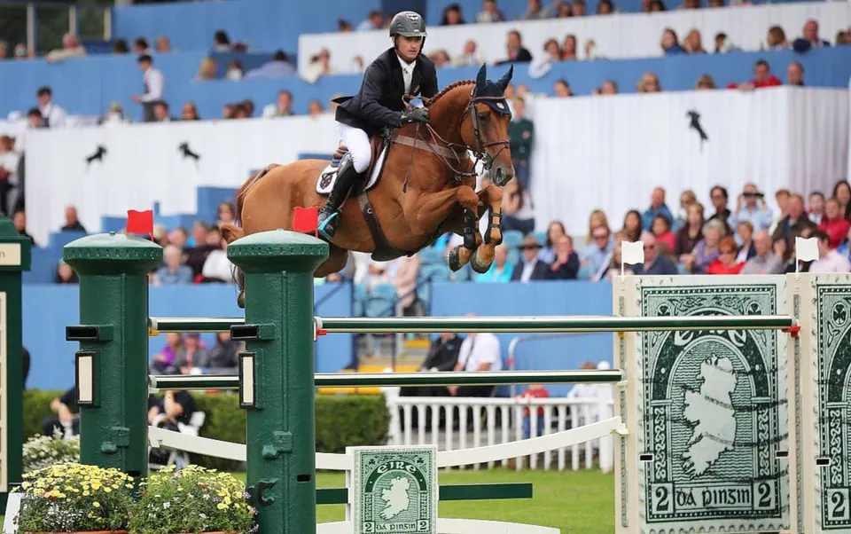
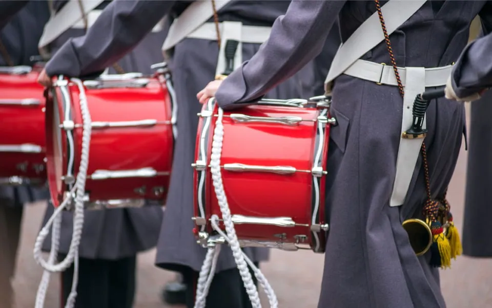
Circuits d'Intérêt Spécial Irlande
De la conception créative d'itinéraires à la gestion de toutes les opérations au sol, notre équipe est l'experte pour faciliter complètement la visite de votre groupe en Irlande.
Nous travaillons en étroite collaboration avec vous pour nous assurer que votre groupe voit tout ce qu'il veut voir, à temps et dans les limites du budget.
Nous Contacter
Pour M.I.C.E, Rugby, F.I.T de Luxe, Équitation et Intérêts Spécifiques
Appel: +353 181 20 200
Email: mice@jorireland.com
Pour les circuits de groupe,
Golf, et A.R.T.I
Appel: +353 214 385 700
Email: sales@jorireland.com
Maude Breteau, Directrice Commerciale,
Marchés francophones
Appel: +336 3202 1000
Email: mbreteau@jorireland.com
Sean Reilly, directeur des ventes,
Amérique du Nord
Appel: +1 913 706 0784
Email: sreilly@jorireland.com
Block A,
Santry Business Park,
Airport Road,
Dublin 9, D09 P5F8
River House,
Blackpool Retail Park,
Cork, T23R5TF